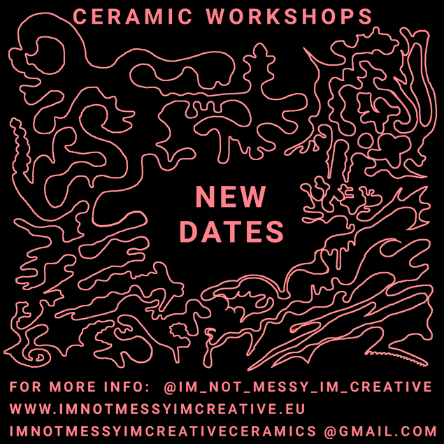

CERAMIC WORKSHOPS
with
Im Not Messy Im Creative
Cosmos.Cac/Campolide Atlético Clube

Spend this winter taking a relaxing ceramic handbuilding workshop!
Creatvity comes first in this workshops and we will focuse on creating
unique and personal pieces in a relaxed and fun atmosphere.
The goal of these workshops is to facilitate your ideas and support you in the process of making your very own pieces.
You can sign up to a try out workshop (2h) or sign up to 4 workshops (8h) and go more into the depth of this craft.
The workshop includes all materials you need to finalize your pieces:(Clay, Engobe Paint, Pigments, Tools), 2 x Kilns.
The glazing will be done by the studio for you after your piece has been bisquefired!
When:
Mondays 19-21 PM
Wednesdays 19-21 PM
Where:
Im Not Messy Im Creative Ceramic Studio in Cosmos.Cac/Campolide Atléthico Clube
Price:
Sign up to 4 Workshops (8h) or 1 Workshop (2h)
1 Workshop (2h): 40 €
4 Workshops (8h): 140 €
Including:
Earthenware Clay, Tools & Transparent Glaze.
How:
Sign-Up by clicking "BOOK WORKSHOP"
Price:
Sign up to 4 Workshops (8h) or 1 Workshop (2h)
1 Workshop (2h): 40 €
4 Workshops (8h): 140 €
Including:
Earthenware Clay, Tools & Transparent Glaze.
How:
Sign-Up by clicking "BOOK WORKSHOP"
| WORKSHOP DAYS | BOOK 1 WORKSHOP HERE | BOOK 4 WORKSHOPS HERE |
|---|---|---|
| MONDAY 19-21 |
BOOK WORKSHOP |
BOOK WORKSHOP |
| WEDNESDAY 19-21 |
BOOK WORKSHOP |
BOOK WORKSHOP |
IMPORTANT:
✿ Once you made a reservation, you will receive an email with payment information.
✿ Your spot will only be confirmed once you have transfered the course fee according to the confirmation email.
✿ Cancelation due to absence/illness will unfortunately not be compensated with re-aranging class dates.
✿ Pieces can be collected after 30 days after workshop ends, before or during class hours on mondays & wednesdays.
✿ If you are visiting Lisbon temporarily and want to take a workshop, shipping your pieces is possible but costs are covered by student.
INTENSIVE WORKSHOP FEBRUARY

A Intensive weekend workshop taking place on 23-24 FEBRUARY.
This workshop is aimed at spending 8 hours during two days solely handbuilding with ceramics.
This enables you to work on one big piece calmly and go through each step of the process with care.
Bring your ideas and we will facilitate it with good support and technical guidance.
When:
23 February (Saturday) 14.00-18.00
24 February (Sunday) 14.00-18.00
Where:
Im Not Messy Im Creative Ceramic Studio in Cosmos.Cac/Campolide Atléthico Clube
Price:
150 €
Including:
- 8 hours of Class
- Clay
- Tools
- Coffee & Croissants
- Engobe Paint / Pigments
- Glaze
- 2 x Kilns
How:
Sign-Up by clicking "BOOK WORKSHOP" below.
| SIGN UP TO INTENSIVE WORKSHOP BOOK WORKSHOP |
OPEN WORKSHOP DAY

Every Tuesday the studio doors of my studio is open for a "Open Workshop Day".
This enables old students who wants to continue with ceramics
or people that have some experience prior to come
and work independently in the studio during a day and attend a Open Workshop Day.
When:
Tuesdays 14-20
Where:
Im Not Messy Im Creative Ceramic Studio in Cosmos.Cac/Campolide Atléthico Clube
Price:
40 € / Session
Including:
Earthenware Clay, Tools & Transparent Glaze.
Additional costs:
Kilns (10 € / kilnshelf), Pigment, Underglazes and other materials you might require you need to bring yourself.
How:
Sign-Up by clicking "BOOK WORKSHOP" below, receive a confirmation email and secure your place by pre-payment.
✿ It is NOT a class so if you want to learn ceramics, its adviced to take at least 4 classes.
When you are able to work independently you are welcome to join a "Open Worskshop Day".
| SIGN UP TO OPEN WORKSHOP DAY BOOK WORKSHOP |
<